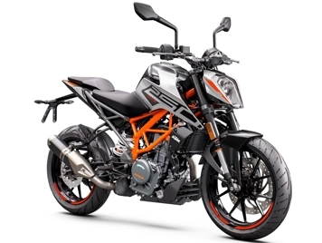

feactures
KTM DUKE 125CC
The Austrian manufacturer KTM has launched its smallest bike – Duke 125 in India. It is India’s first 125cc bike with a liquid-cooled engine. The bike is the most affordable offering from the company but also is the most expensive bike in 125cc segment. Bookings for the Duke 125 have already been commenced.
Success

KTM DUKE 250CC
In terms of features on the 250 Duke, you get fully-digital LCD instrumentation, which in addition to all the standard info also shows you things like distance-to-empty, real-time fuel consumption, and average speed. The tail lamp and turn indicators are LED units, and safety is provided by a dual-channel ABS.
Success
KTM DUKE 390CC
The 2017 update also brought with it a whole host of new features. Lighting is now LED all around, and the bike has been equipped with a colour TFT display. Bluetooth connectivity is standard, and like before, the bike also sports dual-channel ABS and a slipper clutch. New for the BS6 version is a bi-directional quickshifter offered as standard.
Success